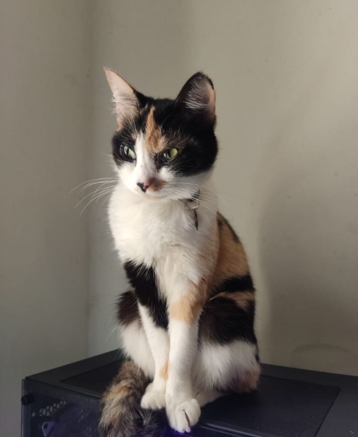
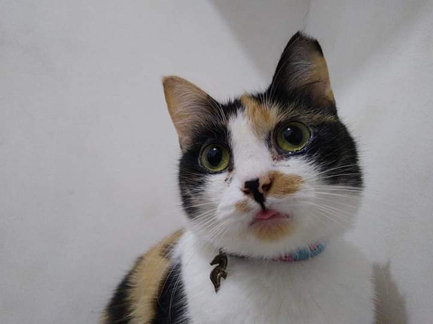

Zoezinha
Nenê do Papai e da MamãeDe acordo com estudos, todos os gatos do mundo descendem de uma espécie: o Felis silvestris lybica, ou gato-da-líbia. Esta é uma espécie selvagem, que habita justamente o Crescente Fértil. ... Com isso, deram origem ao Felis silvestris catus, conhecido pelo comportamento dos gatos domésticos que temos atualmente
Na verdade, o amor dos egípcios por esse animal era tão intenso que havia leis proibindo que os gatos fossem "exportados". Qualquer viajante que fosse encontrado traficando um gato era punido com a pena de morte. Quem matasse um gato era punido da mesma forma e, em caso de morte natural do animal, seus donos deveriam usar trajes de luto.
O gato apresenta 38 cromossomos e são conhecidas cerca de 200 patologias associadas, muitas delas comuns aos seres humanos. O projeto "Genoma do Gato", do Laboratory of Genomic Diversity, pretende descobrir seu genoma.
Os gatos geralmente pesam entre 2,5 e 7 kg; entretanto, exemplares de algumas raças, como o Maine Coon, podem exceder os 12 kg. Já foram até mesmo registrados exemplares com peso superior a 20 kg, aspecto que normalmente ocorre devido ao excesso de alimentação.
“Os gatos são independentes, o que quer dizer inteligentes.”
- Surgiu: 55 milhões de anos
- Tipo: Mamífero
- Idade Média: 16 anos
- Macho adulto: 3 - 4kg
- Fêmea adulta: 3 - 4kg
- Família: Felidae
Os gatos são animais muito higiênicos, sendo que passam muitas horas por dia cuidando da limpeza de seus pelos. Para isso, utilizam a superfície áspera de suas línguas para remover partículas de pó e sujeira. Devido ao modo que tratam da sua higiene, lambendo-se e ingerindo muito pelos, os gatos eventualmente regurgitam esse material na forma de pequenas bolas contendo suco gástrico e material piloso.